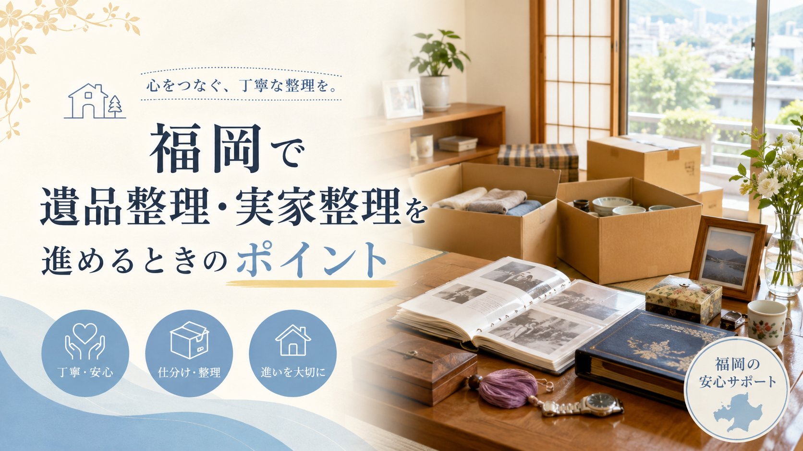

九州お問合せ 10:00-20:00 年中無休
LINE・WEB受付
LINE査定
ESTATE CLEANUP / FUKUOKA
福岡で遺品整理や実家整理を始める方向けの実用ガイド。重要書類・貴重品の確認、家族での方針決め、買取できる物の仕分け、家具家電の状態確認、思い出の品の扱い、出張買取の活用、遠方からの整理まで、無理なく進めるための手順とチェックポイントをまとめました。

遺品整理や実家整理は、単に家の中の物を片付ける作業ではありません。
故人が大切にしていた物、家族の思い出が詰まった物、まだ使える家具や家電、処分に費用がかかる大型品など、さまざまな物を一つずつ判断していく必要があります。
特に福岡市内や近郊エリアでは、マンション、戸建て、団地、空き家になった実家など、住まいの形によって整理の進め方も変わります。急いで片付けようとすると、買取できる物まで処分してしまったり、家族間でトラブルになったりすることもあります。
まずは「残す物」「売る物」「譲る物」「処分する物」に分けて、無理のない順番で進めることが大切です。
遺品整理は、亡くなった方の持ち物を整理する作業です。衣類、家具、家電、貴金属、趣味の品、写真、書類などを確認しながら、必要な物と不要な物を分けていきます。
一方で実家整理は、親が施設へ入居するタイミング、実家を売却するタイミング、空き家になったタイミングなどで行われることが多い整理です。まだ家族が存命の場合もあり、本人の意向を確認しながら進める必要があります。
どちらの場合も、感情的な負担が大きくなりやすいため、すべてを一日で終わらせようとしないことが大切です。
片付けを始める前に、まず探しておきたいのが重要書類や貴重品です。
具体的には、通帳、印鑑、保険証券、不動産関係の書類、年金関係の書類、契約書、権利証、株式や証券口座に関する書類などです。
また、現金、貴金属、時計、宝石、ブランド品、骨董品、記念硬貨、切手、商品券なども、処分品に混ざらないよう注意が必要です。
探しておきたい場所：福岡の実家整理では、押し入れ、仏壇周り、和室の棚、タンスの奥、古いバッグの中などから貴重品が見つかることもあります。片付け業者や買取業者に依頼する前に、家族で一度確認しておくと安心です。
遺品整理や実家整理では、家族間の認識違いがトラブルの原因になることがあります。
たとえば、ある家族は「早く処分したい」と考えていても、別の家族は「思い出の品を残したい」と考えている場合があります。
そのため、作業を始める前に、以下のような点を話し合っておくことが大切です。
特に実家を売却する予定がある場合は、片付けの期限も決めておくと進めやすくなります。
遺品整理や実家整理では、まだ使える家具・家電・ブランド品・趣味用品などが残っていることがあります。
処分業者にまとめて依頼する前に、買取できる物がないか確認しておくと、処分費用を抑えられる可能性があります。
福岡で買取対象になりやすい物には、以下のようなものがあります。
大型家具や家電は自分で店舗へ持ち込むのが難しいため、福岡市内や近郊であれば出張買取を利用すると便利です。
遺品整理や実家整理でよく出てくるのが、大型の家具や家電です。
家電の場合、冷蔵庫、洗濯機、エアコン、テレビ、電子レンジなどは、製造年式が査定に大きく影響します。一般的には新しいものほど買取されやすく、古い家電は買取対象外になることもあります。
家具の場合は、ブランド家具、状態の良いダイニングセット、食器棚、ソファ、チェストなどは買取対象になる可能性があります。ただし、傷みが強い物、においがある物、組み立て式で劣化している物は査定が難しい場合もあります。
処分を決める前に、写真を撮って買取業者に相談すると、買取可能かどうかの目安を確認しやすくなります。
遺品整理では、写真、手紙、日記、記念品、趣味の作品など、金額では判断できない物が多く出てきます。こうした物は、無理にその場で処分する必要はありません。
迷う物は一時保管用の箱を作り、「すぐに処分しない物」として分けておくのがおすすめです。時間を置いてから見直すことで、冷静に判断できることもあります。
特に家族写真やアルバムは、後から取り戻すことができません。必要に応じてデータ化してから整理する方法もあります。
福岡で遺品整理・実家整理を進める際、出張買取を利用すると、大型品の整理がかなり楽になります。
自宅まで査定に来てもらえるため、重い家具や家電を運び出す必要がありません。特に高齢の家族だけで片付けを進めている場合や、遠方から福岡の実家に通って整理している場合には便利です。
また、複数の品物をまとめて見てもらえるため、「これは売れるのか、処分するしかないのか」をその場で相談しやすい点もメリットです。
買取できる物が多ければ、整理費用の一部をまかなえる可能性もあります。
遺品整理や実家整理では、不用品回収業者と買取業者の違いを理解しておくことが大切です。
不用品回収は、不要な物を回収・処分してもらうサービスです。大型家具や処分が難しい物をまとめて片付けたい場合に便利ですが、基本的には費用がかかります。
一方、買取は再販売できる物に値段をつけてもらうサービスです。状態が良い家具や家電、ブランド品、貴金属、趣味用品などは買取対象になる場合があります。
進め方の順番：最初からすべてを処分業者に依頼すると、本来売れた物まで処分してしまう可能性があります。まず買取できる物を確認し、その後に残った物を回収・処分する流れがおすすめです。
福岡の実家を整理したいものの、家族が県外に住んでいるケースも多くあります。この場合は、限られた滞在期間で効率よく進める必要があります。
事前に家の中の写真を撮っておく、買取業者や整理業者に相談しておく、必要な書類や貴重品の確認日を決めておくなど、準備をしてから現地に行くと作業がスムーズです。
また、出張買取を依頼する場合は、希望日より早めに相談しておくことが大切です。引越しシーズンや年末年始前後は予約が混みやすくなることがあります。
実家が空き家になる場合、早めの整理が重要です。
空き家の状態が長く続くと、湿気、カビ、害虫、雨漏り、防犯面の問題が出てくることがあります。家具や家電も、長期間放置すると状態が悪くなり、買取が難しくなる場合があります。
特に福岡は湿気が多い時期もあるため、保管状態によっては木製家具や衣類、紙類に傷みが出やすくなります。
売却や賃貸を検討している場合も、早めに家の中を整理しておくことで、不動産会社への相談や内覧準備が進めやすくなります。
福岡で遺品整理・実家整理に関わる業者へ依頼する場合は、事前に確認しておきたいポイントがあります。
まず、出張対応エリアを確認しましょう。福岡市内だけでなく、春日市、大野城市、太宰府市、糟屋郡、古賀市、糸島市、久留米市、北九州市方面まで対応しているかは業者によって異なります。
次に、見積もり内容が明確かどうかも重要です。買取金額、回収費用、搬出費用、追加料金の有無などを事前に確認しておくと安心です。
また、遺品や実家の物を丁寧に扱ってくれるかどうかも大切です。単に早く片付けるだけでなく、家族の気持ちに配慮してくれる業者を選ぶと安心して任せやすくなります。
家族だけで整理を進める場合は、部屋ごとに作業するのがおすすめです。最初から家全体を一気に片付けようとすると、途中で疲れてしまい、判断も雑になりやすくなります。
おすすめの流れは以下の通りです。
一日で終わらせようとせず、数回に分けて進めることが現実的です。
遺品整理や実家整理は、精神的にも体力的にも負担が大きい作業です。
特に大型家具や家電が多い場合、家族だけで運び出すのは簡単ではありません。まだ使える物が多い場合は、処分する前に出張買取を活用することで、費用を抑えながら整理を進められる可能性があります。
福岡で遺品整理・実家整理を進める際は、まず貴重品や重要書類を確認し、残す物と手放す物を分け、そのうえで買取や回収を検討する流れがおすすめです。
焦ってすべてを処分するのではなく、家族の気持ちと現実的な作業負担の両方を考えながら、一つずつ整理していきましょう。
家まるごと、バリ高く。LINEで写真を送るだけで仮査定OK。
最短即日でお伺いします。査定無料・キャンセル料無料。